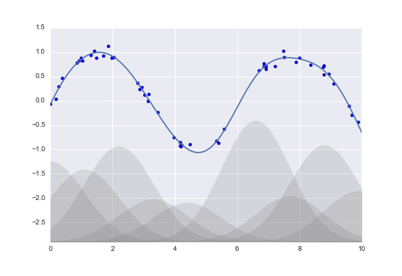

In Depth: Linear Regression¶

This notebook contains an excerpt from the Python Data Science Handbook by Jake VanderPlas; the content is available on GitHub.
The text is released under the CC-BY-NC-ND license, and code is released under the MIT license. If you find this content useful, please consider supporting the work by buying the book!
Naive Bayes (discussed earlier in In Depth: Naive Bayes Classification) is a good starting point for classification tasks.
Linear regression models are a good starting point for regression tasks.
can be fit very quickly,
are very interpretable.
The simplest form of a linear regression model (i.e., fitting a straight line to data)
Extended to model more complicated data behavior.
%matplotlib inline
import matplotlib.pyplot as plt
import seaborn as sns; sns.set()
import numpy as np
Simple Linear Regression¶
We will start with the most familiar linear regression, a straight-line fit to data. A straight-line fit is a model of the form $\( y = ax + b \)\( where \)a\( is commonly known as the *slope*, and \)b$ is commonly known as the intercept.
Consider the following data, which is scattered about a line with a slope of 2 and an intercept of -5:
# generate training set
rng = np.random.RandomState(1)
x = 10 * rng.rand(50)
y = 2 * x - 5 + rng.randn(50)
# generate test set
xtest = np.linspace(0, 10, 1000)
ytest = 2*xtest -5
# plot training set
plt.scatter(x, y);
We can use Scikit-Learn’s LinearRegression estimator to fit this data and construct the best-fit line:
from sklearn.linear_model import LinearRegression
model = LinearRegression(fit_intercept=True)
model.fit(x[:, np.newaxis], y)
# predict ypred for the test set.
ypred = model.predict(xtest[:, np.newaxis])
# plot training set as scatter plot
plt.scatter(x, y)
# plot the predicted result as a strait line
plt.plot(xtest, ypred);
The slope and intercept of the data are contained in the model’s fit parameters, which in Scikit-Learn are always marked by a trailing underscore.
Here the relevant parameters are coef_ and intercept_:
print("Model slope: ", model.coef_[0])
print("Model intercept:", model.intercept_)
Model slope: 2.027208810360695
Model intercept: -4.998577085553202
We see that the results are very close to the inputs, as we might hope.
Model evaluation for regression
RMSE
R Square
https://scikit-learn.org/stable/modules/model_evaluation.html#scoring-parameter
# Root mean square error 均方根误差,亦称标准误差
# https://en.wikipedia.org/wiki/Root-mean-square_deviation
def rmse(y_test, y_pred):
mse = np.mean((y_test - y_pred) ** 2)
rmse = mse ** 0.5
return rmse
# R square
# https://en.wikipedia.org/wiki/Coefficient_of_determination
def R2(y_test, y_pred):
residuals_sum_of_squares = np.sum((y_pred - y_test)**2)
total_sum_of_squares = np.sum((y_test - np.mean(y_test))**2)
return 1 - residuals_sum_of_squares/total_sum_of_squares
print('RMSE: %.4f' % rmse(ytest, ypred))
print('R2 score: %.4f' % R2(ytest, ypred))
RMSE: 0.1584
R2 score: 0.9992
from sklearn.metrics import mean_squared_error, r2_score, explained_variance_score
print('RMSE: %.4f' % mean_squared_error(ytest, ypred) ** 0.5)
print('R2 score: %.4f' % r2_score(ytest, ypred))
print('Variance score: %.4f' % explained_variance_score(ytest, ypred))
RMSE: 0.1584
R2 score: 0.9992
Variance score: 0.9998
The LinearRegression estimator is much more capable than this, however—in addition to simple straight-line fits, it can also handle multidimensional linear models of the form
$\(
y = a_0 + a_1 x_1 + a_2 x_2 + \cdots
\)\(
where there are multiple \)x$ values.
Geometrically, this is akin to fitting a plane to points in three dimensions, or fitting a hyper-plane to points in higher dimensions.
Building some example data using NumPy
The multidimensional nature of such regressions makes them more difficult to visualize
rng = np.random.RandomState(1)
X = 10 * rng.rand(100, 3) #three features
y = 0.5 + np.dot(X, [1.5, -2., 1.])
# y is constructed from three random X features
we can use the single LinearRegression estimator to fit lines, planes, or hyperplanes to our data.
model.fit(X, y)
print(model.intercept_)
print(model.coef_)
0.5000000000000144
[ 1.5 -2. 1. ]
Basis Function Regression 基函数回归¶
One trick you can use to adapt linear regression to nonlinear relationships between variables
to transform the data according to basis functions.
We have seen one version of this before, in the PolynomialRegression pipeline used in Hyperparameters and Model Validation and Feature Engineering.
The idea is to take our multidimensional linear model: $\( y = a_0 + a_1 x_1 + a_2 x_2 + a_3 x_3 + \cdots \)\( and build the \)x_1, x_2, x_3,\( and so on, from our single-dimensional input \)x$.
That is, we let \(x_n = f_n(x)\), where \(f_n()\) is some function that transforms our data.
For example, if \(f_n(x) = x^n\), our model becomes a polynomial regression: $\( y = a_0 + a_1 x + a_2 x^2 + a_3 x^3 + \cdots \)$
Notice that this is still a linear model
the linearity refers to the fact that the coefficients \(a_n\) never multiply or divide each other.
What we have effectively done is taken our one-dimensional \(x\) values and projected them into a higher dimension, so that a linear fit can fit more complicated relationships between \(x\) and \(y\).
Polynomial basis functions 多项式基函数¶
polynomial, Synonym: multinomial, 多项式
This polynomial projection is useful enough that it is built into Scikit-Learn, using the PolynomialFeatures transformer:
from sklearn.preprocessing import PolynomialFeatures
x = np.array([2, 3, 4])
poly = PolynomialFeatures(3, include_bias=False)
poly.fit_transform(x[:, None])
array([[ 2., 4., 8.],
[ 3., 9., 27.],
[ 4., 16., 64.]])
We see here that the transformer has converted our one-dimensional array into a three-dimensional array by taking the exponent of each value.
This new, higher-dimensional data representation can then be plugged into a linear regression.
As we saw in Feature Engineering, the cleanest way to accomplish this is to use a pipeline.
Let’s make a 7th-degree polynomial model in this way:
from sklearn.pipeline import make_pipeline
poly_model = make_pipeline(PolynomialFeatures(7),
LinearRegression())
With this transform in place, we can use the linear model to fit much more complicated relationships between \(x\) and \(y\).
For example, here is a sine wave with noise:
Our linear model, through the use of 7th-order polynomial basis functions, can provide an excellent fit to this non-linear data!
rng = np.random.RandomState(1)
x = 10 * rng.rand(50)
y = np.sin(x) + 0.1 * rng.randn(50)
xfit = np.linspace(0, 10, 1000)
poly_model.fit(x[:, np.newaxis], y)
yfit = poly_model.predict(xfit[:, np.newaxis])
plt.scatter(x, y)
plt.plot(xfit, yfit);
Gaussian basis functions 高斯基函数¶
Of course, other basis functions are possible. For example, one useful pattern is to fit a model that is not a sum of polynomial bases, but a sum of Gaussian bases. The result might look something like the following figure:
{kind=link}
The shaded regions in the plot are the scaled basis functions, and when added together they reproduce the smooth curve through the data.
These Gaussian basis functions are not built into Scikit-Learn,
but we can write a custom transformer that will create them
Scikit-Learn transformers are implemented as Python classes;
reading Scikit-Learn’s source is a good way to see how they can be created:
The simplest case of a normal distribution is known as the ‘’standard normal distribution’’.
from sklearn.base import BaseEstimator, TransformerMixin
class GaussianFeatures(BaseEstimator, TransformerMixin):
"""Uniformly spaced Gaussian features for one-dimensional input"""
def __init__(self, N, sigma_factor=2.0):
self.N = N
self.sigma_factor = sigma_factor
@staticmethod
def _gauss_basis(x, mu, sigma, axis=None):
arg = (x - mu) / sigma
return np.exp(-0.5 * np.sum(arg ** 2, axis))
def fit(self, X, y=None):
# create N centers spread along the data range
self.mu_ = np.linspace(X.min(), X.max(), self.N)
self.sigma_ = self.sigma_factor * (self.mu_[1] - self.mu_[0])
return self
def transform(self, X):
return self._gauss_basis(X[:, :, np.newaxis], self.mu_,
self.sigma_, axis=1)
rng = np.random.RandomState(1)
x = 10 * rng.rand(50)
y = np.sin(x) + 0.1 * rng.randn(50)
xfit = np.linspace(0, 10, 1000)
gauss_model = make_pipeline(GaussianFeatures(20),
LinearRegression())
gauss_model.fit(x[:, np.newaxis], y)
yfit = gauss_model.predict(xfit[:, np.newaxis])
plt.scatter(x, y)
plt.plot(xfit, yfit)
plt.xlim(0, 10);
There is nothing magic about polynomial basis functions:
You should have some sort of intuition about the generating process of your data;
If you think one basis or another might be appropriate, you can use them as well.
Regularization 正则化¶
The introduction of basis functions into our linear regression makes the model much more flexible,
but it also can very quickly lead to over-fitting (refer back to Hyperparameters and Model Validation for a discussion of this).
For example, if we choose too many Gaussian basis functions, we end up with results that don’t look so good:
model = make_pipeline(GaussianFeatures(30),
LinearRegression())
model.fit(x[:, np.newaxis], y)
plt.scatter(x, y)
plt.plot(xfit, model.predict(xfit[:, np.newaxis]))
plt.xlim(0, 10)
plt.ylim(-5, 1.5);

With the data projected to the 30-dimensional basis, the model has far too much flexibility and goes to extreme values between locations where it is constrained by data.
We can see the reason for this if we plot the coefficients of the Gaussian bases with respect to their locations:
def basis_plot(model, title=None):
fig, ax = plt.subplots(2, sharex=True)
model.fit(x[:, np.newaxis], y)
ax[0].scatter(x, y)
ax[0].plot(xfit, model.predict(xfit[:, np.newaxis]))
ax[0].set(xlabel='x', ylabel='y', ylim=(-5, 1.5))
if title:
ax[0].set_title(title)
ax[1].plot(model.steps[0][1].mu_,
model.steps[1][1].coef_)
ax[1].set(xlabel='basis location',
ylabel='coefficient',
xlim=(0, 10))
model = make_pipeline(GaussianFeatures(30), LinearRegression())
basis_plot(model)
This is typical over-fitting behavior when basis functions overlap:
the coefficients of adjacent basis functions blow up and cancel each other out.
We know that such behavior is problematic
It would be nice if we could limit such spikes expliticly in the model
by penalizing large values of the model parameters.
Such a penalty is known as regularization, and comes in several forms.
Ridge regression (\(L_2\) Regularization) 岭回归¶
ridge regression or \(L_2\) regularization, sometimes also called Tikhonov regularization.
Perhaps the most common form of regularization
This proceeds by penalizing the sum of squares (2-norms) of the model coefficients;
The penalty on the model fit would be $\( P = \alpha\sum_{n=1}^N \theta_n^2 \)$
where \(\alpha\) is a free parameter that controls the strength of the penalty.
This type of penalized model is built into Scikit-Learn with the Ridge estimator:
from sklearn.linear_model import Ridge
model = make_pipeline(GaussianFeatures(30), Ridge(alpha=0.1))
basis_plot(model, title='Ridge Regression')
The \(\alpha\) parameter is essentially a knob controlling the complexity of the resulting model.
In the limit \(\alpha \to 0\), we recover the standard linear regression result;
in the limit \(\alpha \to \infty\), all model responses will be suppressed.
One advantage of ridge regression in particular is that it can be computed very efficiently
at hardly more computational cost than the original linear regression model.
Lasso regression (\(L_1\) regularization) 套索回归¶
Lasso regression involves penalizing the sum of absolute values (1-norms) of regression coefficients: $\( P = \alpha\sum_{n=1}^N |\theta_n| \)$ Though this is conceptually very similar to ridge regression, the results can differ surprisingly:
for example, due to geometric reasons lasso regression tends to favor sparse models where possible:
it preferentially sets model coefficients to exactly zero.
We can see this behavior in duplicating the ridge regression figure, but using L1-normalized coefficients:
from sklearn.linear_model import Lasso
model = make_pipeline(GaussianFeatures(30), Lasso(alpha=0.01))
basis_plot(model, title='Lasso Regression')
With the lasso regression penalty, the majority of the coefficients are exactly zero,
with the functional behavior being modeled by a small subset of the available basis functions.
As with ridge regularization, the \(\alpha\) parameter tunes the strength of the penalty, and should be determined via, for example, cross-validation (refer back to Hyperparameters and Model Validation for a discussion of this).
Example: Predicting Bicycle Traffic¶
To predict the number of bicycle trips across Seattle’s Fremont Bridge based on weather, season, and other factors.
we will join the bike data with another dataset, and
try to determine the extent to which weather and seasonal factors—temperature, precipitation, and daylight hours—affect the volume of bicycle traffic through this corridor.
the NOAA makes available their daily weather station data (I used station ID USW00024233)
we can easily use Pandas to join the two data sources.
We will perform a simple linear regression to relate weather and other information to bicycle counts, in order to estimate how a change in any one of these parameters affects the number of riders on a given day.
In particular, this is an example of how the tools of Scikit-Learn can be used in a statistical modeling framework, in which the parameters of the model are assumed to have interpretable meaning.
Let’s start by loading the two datasets, indexing by date:
# !curl -o FremontBridge.csv https://data.seattle.gov/api/views/65db-xm6k/rows.csv?accessType=DOWNLOAD
import pandas as pd
counts = pd.read_csv('../data/Fremont_Bridge.csv', index_col='Date', parse_dates=True)
weather = pd.read_csv('../data/BicycleWeather.csv', index_col='DATE', parse_dates=True)
Next we will compute the total daily bicycle traffic, and put this in its own dataframe:
daily = counts.resample('d').sum()
daily['Total'] = daily.sum(axis=1)
daily = daily[['Total']] # remove other columns
We saw previously that the patterns of use generally vary from day to day; let’s account for this in our data by adding binary columns that indicate the day of the week:
days = ['Mon', 'Tue', 'Wed', 'Thu', 'Fri', 'Sat', 'Sun']
for i in range(7):
daily[days[i]] = (daily.index.dayofweek == i).astype(float)
Similarly, we might expect riders to behave differently on holidays; let’s add an indicator of this as well:
from pandas.tseries.holiday import USFederalHolidayCalendar
cal = USFederalHolidayCalendar()
holidays = cal.holidays('2012', '2016')
daily = daily.join(pd.Series(1, index=holidays, name='holiday'))
daily['holiday'].fillna(0, inplace=True)
We also might suspect that the hours of daylight would affect how many people ride; let’s use the standard astronomical calculation to add this information:
from datetime import datetime
def hours_of_daylight(date, axis=23.44, latitude=47.61):
"""Compute the hours of daylight for the given date"""
days = (date - datetime(2000, 12, 21)).days
m = (1. - np.tan(np.radians(latitude))
* np.tan(np.radians(axis) * np.cos(days * 2 * np.pi / 365.25)))
return 24. * np.degrees(np.arccos(1 - np.clip(m, 0, 2))) / 180.
daily['daylight_hrs'] = list(map(hours_of_daylight, daily.index))
daily[['daylight_hrs']].plot()
plt.ylim(8, 17)
(8, 17)
We can also add the average temperature and total precipitation to the data. In addition to the inches of precipitation, let’s add a flag that indicates whether a day is dry (has zero precipitation):
# temperatures are in 1/10 deg C; convert to C
weather['TMIN'] /= 10
weather['TMAX'] /= 10
weather['Temp (C)'] = 0.5 * (weather['TMIN'] + weather['TMAX'])
# precip is in 1/10 mm; convert to inches
weather['PRCP'] /= 254
weather['dry day'] = (weather['PRCP'] == 0).astype(int)
daily = daily.join(weather[['PRCP', 'Temp (C)', 'dry day']])
Finally, let’s add a counter that increases from day 1, and measures how many years have passed. This will let us measure any observed annual increase or decrease in daily crossings:
daily['annual'] = (daily.index - daily.index[0]).days / 365.
Now our data is in order, and we can take a look at it:
daily.head()
| Total | Mon | Tue | Wed | Thu | Fri | Sat | Sun | holiday | daylight_hrs | PRCP | Temp (C) | dry day | annual | |
|---|---|---|---|---|---|---|---|---|---|---|---|---|---|---|
| Date | ||||||||||||||
| 2012-10-03 | 3521.0 | 0.0 | 0.0 | 1.0 | 0.0 | 0.0 | 0.0 | 0.0 | 0.0 | 11.277359 | 0.0 | 13.35 | 1.0 | 0.000000 |
| 2012-10-04 | 3475.0 | 0.0 | 0.0 | 0.0 | 1.0 | 0.0 | 0.0 | 0.0 | 0.0 | 11.219142 | 0.0 | 13.60 | 1.0 | 0.002740 |
| 2012-10-05 | 3148.0 | 0.0 | 0.0 | 0.0 | 0.0 | 1.0 | 0.0 | 0.0 | 0.0 | 11.161038 | 0.0 | 15.30 | 1.0 | 0.005479 |
| 2012-10-06 | 2006.0 | 0.0 | 0.0 | 0.0 | 0.0 | 0.0 | 1.0 | 0.0 | 0.0 | 11.103056 | 0.0 | 15.85 | 1.0 | 0.008219 |
| 2012-10-07 | 2142.0 | 0.0 | 0.0 | 0.0 | 0.0 | 0.0 | 0.0 | 1.0 | 0.0 | 11.045208 | 0.0 | 15.85 | 1.0 | 0.010959 |
With this in place, we can choose the columns to use, and fit a linear regression model to our data.
We will set fit_intercept = False, because the daily flags essentially operate as their own day-specific intercepts:
# Drop any rows with null values
daily.dropna(axis=0, how='any', inplace=True)
column_names = ['Mon', 'Tue', 'Wed', 'Thu', 'Fri', 'Sat', 'Sun', 'holiday',
'daylight_hrs', 'PRCP', 'dry day', 'Temp (C)', 'annual']
X = daily[column_names]
y = daily['Total']
model = LinearRegression(fit_intercept=False)
model.fit(X, y)
daily['predicted'] = model.predict(X)
Finally, we can compare the total and predicted bicycle traffic visually:
daily[['Total', 'predicted']].plot(alpha=0.5);
It is evident that we have missed some key features, especially during the summer time.
Either our features are not complete
i.e., people decide whether to ride to work based on more than just these
or there are some nonlinear relationships that we have failed to take into account
e.g., perhaps people ride less at both high and low temperatures
Nevertheless, our rough approximation is enough to give us some insights, and we can take a look at the coefficients of the linear model to estimate how much each feature contributes to the daily bicycle count:
params = pd.Series(model.coef_, index=X.columns)
params
Mon 504.882756
Tue 610.233936
Wed 592.673642
Thu 482.358115
Fri 177.980345
Sat -1103.301710
Sun -1133.567246
holiday -1187.401381
daylight_hrs 128.851511
PRCP -664.834882
dry day 547.698592
Temp (C) 65.162791
annual 26.942713
dtype: float64
These numbers are difficult to interpret without some measure of their uncertainty. We can compute these uncertainties quickly using bootstrap resamplings of the data:
from sklearn.utils import resample
np.random.seed(1)
err = np.std([model.fit(*resample(X, y)).coef_
for i in range(1000)], 0)
With these errors estimated, let’s again look at the results:
print(pd.DataFrame({'effect': params.round(0),
'error': err.round(0)}))
effect error
Mon 505.0 86.0
Tue 610.0 83.0
Wed 593.0 83.0
Thu 482.0 85.0
Fri 178.0 81.0
Sat -1103.0 80.0
Sun -1134.0 83.0
holiday -1187.0 163.0
daylight_hrs 129.0 9.0
PRCP -665.0 62.0
dry day 548.0 33.0
Temp (C) 65.0 4.0
annual 27.0 18.0
We first see that there is a relatively stable trend in the weekly baseline:
there are many more riders on weekdays than on weekends and holidays.
We see that for each additional hour of daylight, 129 ± 9 more people choose to ride;
a temperature increase of one degree Celsius encourages 65 ± 4 people to grab their bicycle;
a dry day means an average of 548 ± 33 more riders, and each inch of precipitation means 665 ± 62 more people leave their bike at home.
Once all these effects are accounted for, we see a modest increase of 27 ± 18 new daily riders each year.
Our model is almost certainly missing some relevant information.
For example, nonlinear effects
such as effects of precipitation and cold temperature
nonlinear trends within each variable
such as disinclination to ride at very cold and very hot temperatures
Additionally, we have thrown away some of the finer-grained information
such as the difference between a rainy morning and a rainy afternoon,
and we have ignored correlations between days
such as the possible effect of a rainy Tuesday on Wednesday’s numbers,
or the effect of an unexpected sunny day after a streak of rainy days.
These are all potentially interesting effects, and you now have the tools to begin exploring them if you wish!